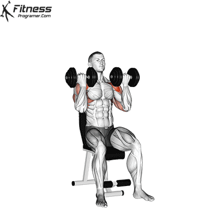
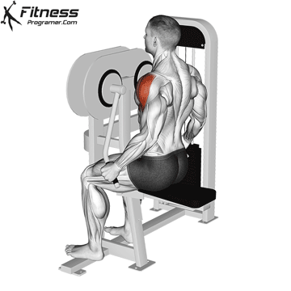

- On Omuz:Kolu one ve yukari kaldirmayi saglarBench Press ve Overhead Press gibi tum itis hareketlerinde zaten ikincil olarak yogun calisir.
- Yan Omuz:Omuza o genis gorunumu veren en onemli kisimdir.Kolu yana dogru kaldirma hareketleriyle izole edilir.
- Arka Omuz:Kolu geriye cekmeni saglar.Durusu(Postur)duzeltir,omuz sakatliklarini onler ve profilden bakildiginda dolgunluk katar.Genelde en cok ihmal edilen bolgedir.
Antrenman yaparken dikkat etmeniz gerekenler:
- Yan ve Arka Omuza Oncelik Verin:On omuz zaten gogus antrenmanlariyla yeterince calisiyor.Bu yuzden omuzgunlerinde odaginiz yan ve arka omuz olmali.
- Agir Agirlik Yerine Dogru Form:Omuz bolgesi vucudun sakatlanmaya en musait bolgelerinden biridir.Ozellikle Lateral Rise yaparken trapezleri devreye sokacak kadar agir agirlik kaldirmayin.
- Scaption Acisini Kullanin:Yan omuz kaldirislarinda(Lateral Raise)kollarinizi tam olarak 180 derece yana acmak yerine govdenizle yaklasik 15-30 derece one dogru bir aciyla yapin.Bu omuz sakatligi ihtimalini ciddi olcude azaltacaktir.
- Yuksek Tekrar:Yan ve arka omuz lifleri yavas kasan(type 1)lif turundedir.Bu yuzden yuksek yanmaya yuksek tepki verir.Bu bolgelerde 12-20 tekrar idealdir.
Omuz icin en iyi egzersizler:
- Overhead Press:Tum omuz kompleksini ve ozellikle on omuzu calistiran ana guc hareketidir.
- Arnold Press:Agirligi kaldirriken bilegi dondurerek yapildigi icin one ve ayn omzu liflerini daha genis bir hareket agirliginda uyarir.
- Lever Lateral Rise:Yan omuz gelistirmenin kilit hareketidir.Dirsekleri hafif bukuk tutarak daha yuksek bi verim elde edebilirsiniz.
- Face Pulls:Kabloyla yapilan,hem arka hem de rotator kilif kaslarini guclendiren,durusu duzelten en iyi egzersizdir.




Drop-Set ve Partial Reps:Yan omuz antrenmaninin son setinde tukenise gittikten sonra kilonu %30 azaltip hemen devam edin(drop-set).Ya da hareket araliginin yarisini kullanarak(Partial reps) kasi tamamen yakana kadar zorlayin.Bunlara ekstra olarak omuzlari gogus ve sirt gunlerine bolmek sizin veriminizi arttiracaktir.